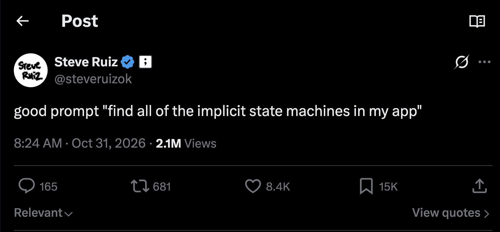
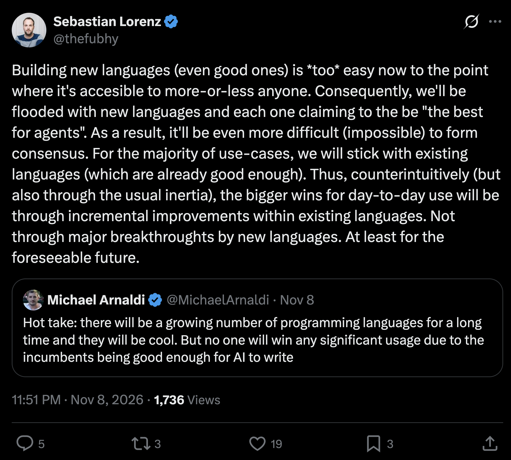
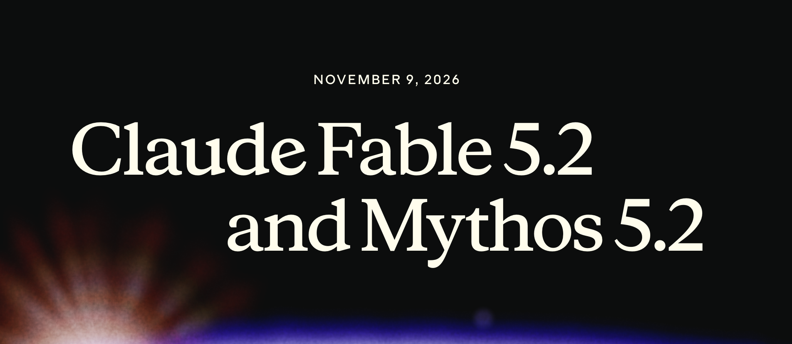
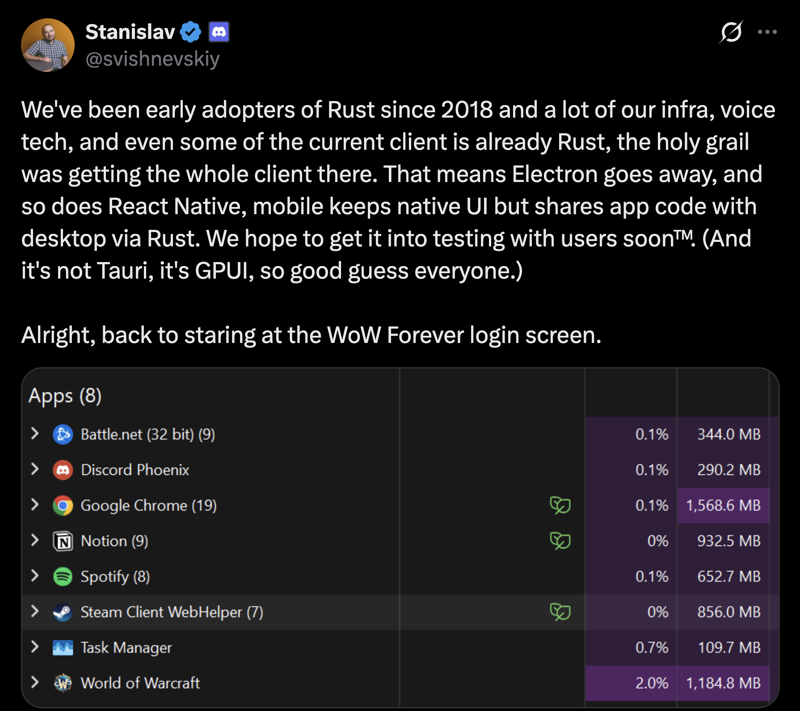
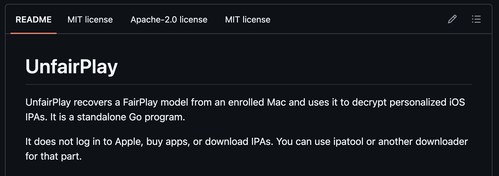

Denver, Co 🇺🇸
@stolinski
Denver, Co 🏔️🇺🇸
@CodingGarden 𝕏 @w3cj.com 🦋





Is brain rot happening at big tech? Are engineers losing their skills without realizing it?
What does vibe coding mean in late 2026? If AI is essential to compete, why is “vibe coded” a slur—even for experienced devs and hand-written projects?
If AI replaces search, will “google” stop being a verb? How does Google stay in business?
Can Claude Code or similar tools connect to WebMCP? If not, where is WebMCP useful?
Why release an app if a good idea gets buried under 100 AI slop clones within a week? Can indie apps still earn a reputation or revenue?
Beyond linters and Git hooks, how do teams enforce design system architecture—preventing anti-patterns and invented variants?
What technical skills help developers work better with AI and stay less expendable—especially without a traditional CS background?
While an AI agent runs for minutes, do you walk away or sit and watch it?